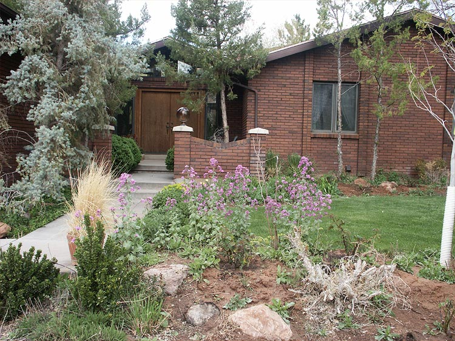
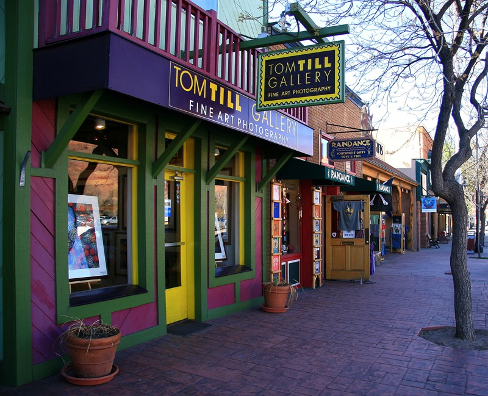
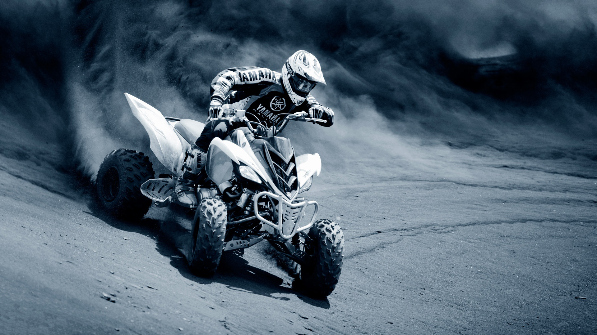

Amenities
Let the Mayor's House Bed and Breakfast be your oasis amid the spectacular red rock country of Canyonlands.
Amenities
Spend the afternoon by the large, heated swimming pool or in the invigorating hot tub looking out over the Moab Valley with its towering red rock formations and the spectacular Moab Rim.

Or, if you prefer a more private setting, find a comfortable spot to sit in the sunken garden, where the canopy of jade-green leaves provides a shelter from the hot Southwestern sun.

The house was built in 1980; it is a rambling 6000 square-foot home featuring a large common room, six guest rooms, and spacious decks overlooking beautiful landscaped gardens. The B&B also features a large, heated swimming pool and hot tub.
Use us as your home base to explore beautiful national and state parks, spectacular canyons, rugged mountains and breathtaking vistas. Let the staff at the Mayor's House help you plan your itinerary to take advantage of the many recreational activities available here in the heart of red rock country.
Come and see why so many of our guests return to see us year after year.
What better way to start your day in Moab than with a hearty and healthy breakfast served either at the breakfast table.
Start your breakfast with freshly-brewed coffee or tea, and orange juice. The meal is served family style starting with half a grapefruit, followed by one of the following: quiche, Southwestern fritata, waffles with fresh strawberries, blueberry pancakes, egg strata, or French toast with caramel apple syrup. Freshly baked pastries such as Cowboy Cinnamon Rolls, an assortment of muffins, or freshly baked bread accompany the main dish.
Special diet requirements can be arranged during the initial reservation arrangements.
There is no additional charge for breakfast, which is offered from 7:30 to 8:30, served family-style.
Phones
Telephone service is available during your stay with us. A calling card is required for all outgoing long-distance calls.
If family and friends will be making calls to reach you at the B&B, please provide them with the following number: 435 259-6015.
Internet
The B&B can provide Internet service for guests to check their e-mail. Wireless devices are accommodated.
What else?
Amenities that go beyond the typical B&B include:
- Large, heated swimming pool with lap lane
- Spacious hot tub
- Large common room with books and maps on the surrounding areas
- TV with DVD player in every room
- DVD library
- Locked bike storage
- Ample off-street parking for automobiles and trailers
- Private baths in all rooms
- A full country breakfast with daily fresh-baked goods and fresh fruit
- Ability to accommodate some special diets
- Concierge-type service linking guests to other businesses and services in Moab
Our Location
The Mayor's House is perfectly situated in a quiet neighborhood overlooking the town of Moab, just 4 1/2 blocks from downtown-area shopping, restaurants, museums and art galleries. The view of the world-famous Slickrock Bike Trail makes the perfect background for a relaxing afternoon by the pool.
Access To Local Attractions
The B&B is within a few minutes walk from Moab's central business district, but well away from the noise and congestion of downtown. The B&B is also situated close to the Slickrock Bike Trail, 10 minutes from the entrance to Arches National Park, and 30 minutes from the entrance to Canyonlands National Park. Many bike trails, hiking trails, and jeep trails are all within a short distance of the B&B.
Bring Your Toys
We invite you to make use of our ample off-street parking, which can accommodate virtually all types of vehicles and trailers. A locked bike storage shed is also available.
Directions
Moab is approximately 4½ hours from Salt Lake City, Utah, and six hours from Denver, Colorado.